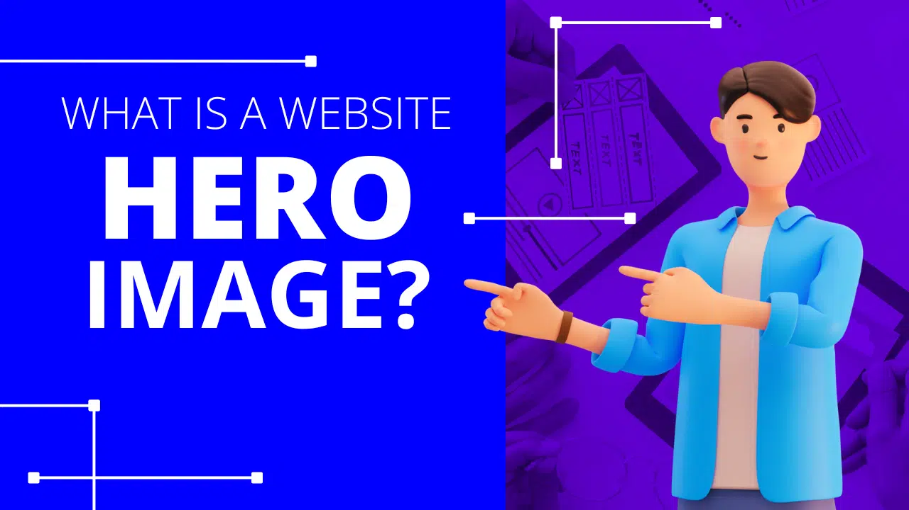

What is a hero image?
The term ‘hero image’ refers to a specific type of website banner. A hero image is usually quite large and often sits at the top of a website.
Hero images are often the first thing your website and serve as a glimpse of what your business offers. It's wise to think of hero images like an introduction – they give users a sense of what to expect from the rest of the site. You can create a website mockup to see how your hero banner would look like and refine and review your website’s final look.
A hero image is important because it takes valuable real estate on your website. Hero images can also serve as a direct conversion tool, and can also be used to promote new initiatives or promote your brand proposition.
